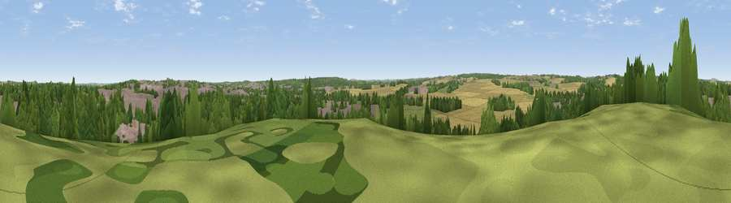

Woodlands View Point
#37046 in England · top 73% of its area beats it · near RhodesiaThe view, rendered

A 360° render of this exact spot computed from the terrain model, tree cover and land cover — summer colours, afternoon light, calibrated against photographs of famous viewpoints. Real trees, hedges and buildings will differ in detail.
The panorama
Grey silhouette: terrain skyline in each direction (720 bearings, Earth curvature and refraction included). Dashed green: skyline with trees (+15 m) and buildings (+8 m) as obstacles. Blue strip: how far the ground is visible on each bearing.
Where the view opens
Wedge length = distance to the farthest visible ground on that bearing (vegetation-aware). Rings at 10, 25 and 50 km.
What fills the view
33% cropland · 26% woodland · 25% built-up · 16% grassland
Angular shares of the visible panorama (visual magnitude), not map area. Landscape diversity 0.60 (0–1 Shannon).
Key numbers
More beautiful places nearby
The staircase of upgrades: each row has a higher view potential than everything closer. Driving times are estimates from straight-line distance, calibrated against real road routing — check an actual route before setting out.
| Place | Direction | Drive | Score |
|---|---|---|---|
| Viewpoint near Netherthorpe | WNW · 2 km | ~6 min | 42.1 |
| Viewpoint near Worksop | SSE · 5 km | ~11 min | 48.1 |
| Honey Hills | NNE · 5 km | ~12 min | 51.8 |
| Viewpoint near Meden Vale | S · 10 km | ~20 min | 65.2 |
| Viewpoint near Maltby | N · 12 km | ~22 min | 70.8 |
| Viewpoint near Oughtibridge | WNW · 27 km | ~43 min | 72.5 |
| Viewpoint near Wharncliffe Side | WNW · 29 km | ~46 min | 75.2 |
| Tissington Hill | SW · 50 km | ~71 min | 75.5 |
53.31958, -1.15743 · source: osm viewpoint · position refined by local search. Computed location — check access rights before visiting.